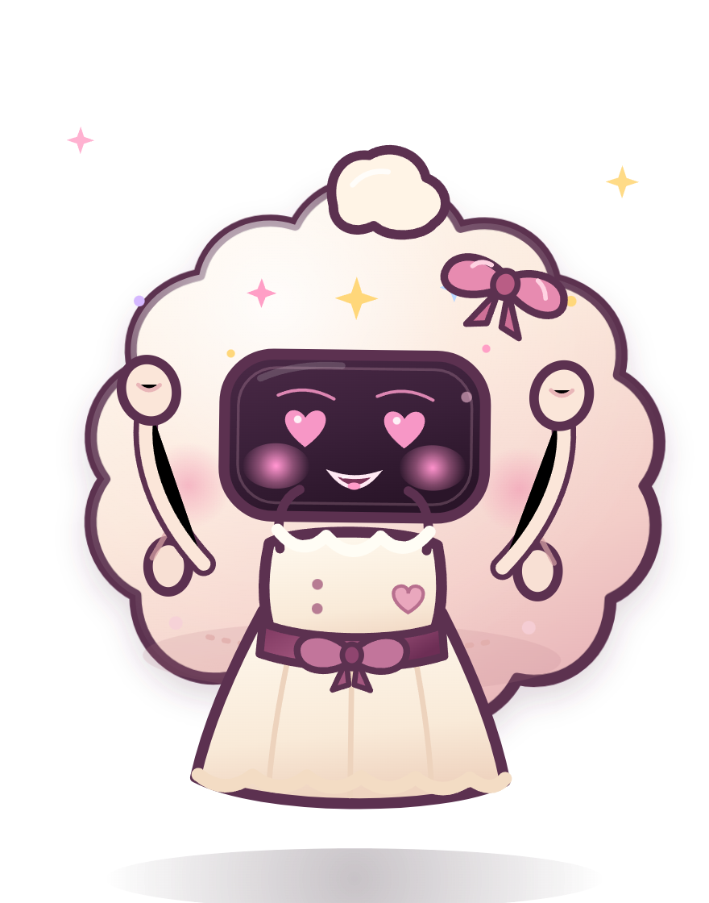
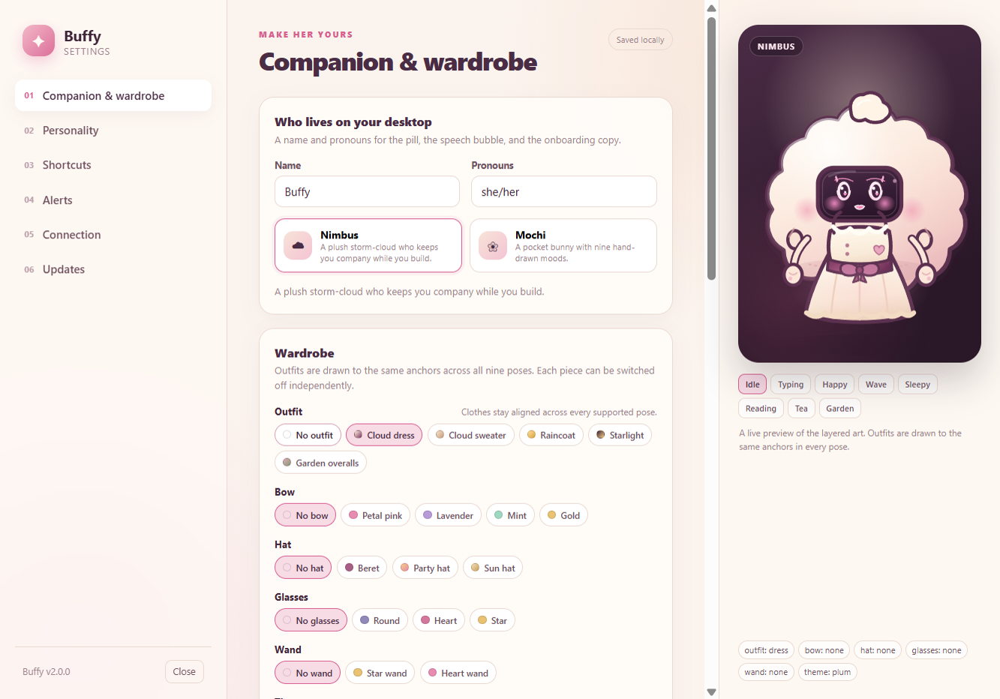
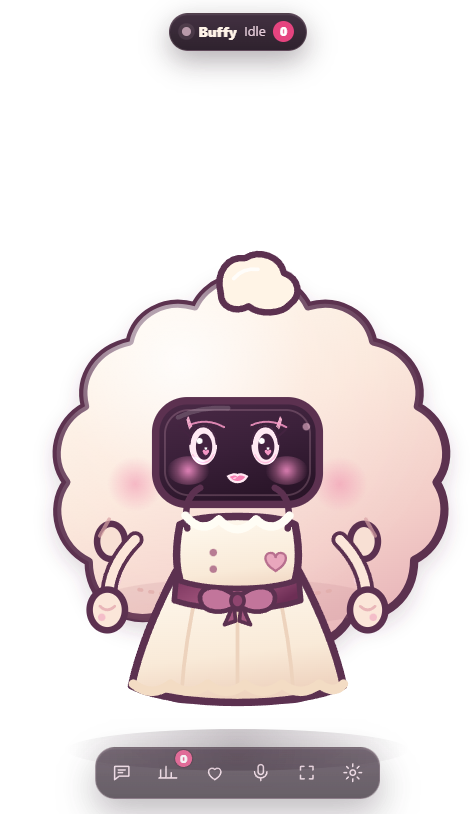
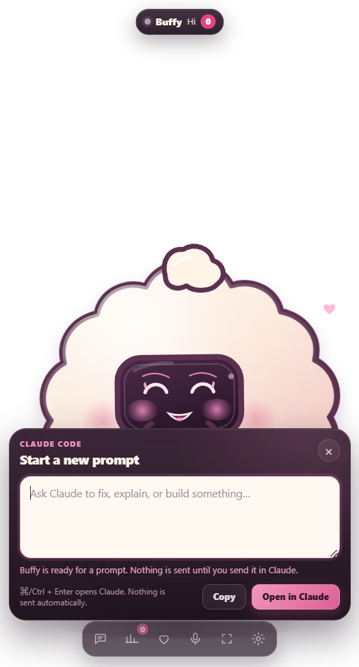

A composer, not a chat window
Write a prompt in the overlay, press Cmd/Ctrl+Enter, and Buffy opens it in Claude’s new-session screen. Nothing sends until you send it in Claude, and drafts survive hiding, compact mode, and a failed handoff.
A desk pet for your coding agent
A plush little cloud who lives on your desktop, tracks Claude Code and Freebuff sessions, carries your next prompt into Claude, and settles in for a nap when the work is done.

Little companion, big feelings
Buffy isn’t another chat window. She’s a small, always-on-top signal that your agent is thinking, working, stuck, or finished — and a shortcut for the prompt you were about to write anyway.
Write a prompt in the overlay, press Cmd/Ctrl+Enter, and Buffy opens it in Claude’s new-session screen. Nothing sends until you send it in Claude, and drafts survive hiding, compact mode, and a failed handoff.
needs-you beats error, then working, thinking, done, and idle. Parallel requests keep their own cards, so one finished tool call doesn’t wipe another session’s question.
Two characters and nine poses drawn to the same anchors. Toggle outfits, bows, hats, glasses, and wands independently, save 32 looks per character, favorite the good ones, or let a daily rotation pick for you.
Notifications and sounds are off until you ask. Snooze for 15 minutes, an hour, or four. Personality decorations pause while you compose, and reduced motion, compact head-only mode, and 80–175% scale keep her out of the way.
In her natural habitat
Real moments from the overlay and settings — no mockups, no filters, just a small plush cloud doing her best.



Under the little cloud
Buffy is not a chatbot. Agents send lightweight events to a daemon on 127.0.0.1; the daemon owns the state and the overlay draws it. Settings, looks, and positions stay in ~/.buffy, and the composer only builds a claude:// link for you to confirm.
$ buffy event thinking --source claude
$ buffy event working \
--source freebuff --msg "editing src/app.ts"
$ buffy event needs-you \
--msg "waiting on your approval"
$ buffy event done
# she does the restReady for a coworker?
Buffy’s desktop apps include the pet, its local daemon, and a packaged Claude hook installer in Settings → Connection. Open one and she’s there — no Node checkout needed for the pet or the Claude setup. The optional buffy CLI and Freebuff instructions still run from the checkout.
macOS Apple silicon macOS Intel Linux AppImage
Free and open source under the MIT license. Builds are unsigned unless signing credentials are configured, so Windows SmartScreen or macOS Gatekeeper may ask you to confirm. Checksums and update metadata are attached to the release.
Every installer has a matching .sha256 file on the v2.1.0 release page.
Prefer to build it?
git clone https://github.com/slayyyyer/buffy.git
cd buffy
npm install
npm run dist:winmacOS and Linux targets are included too. Build on the target OS with npm run dist:mac or npm run dist:linux.